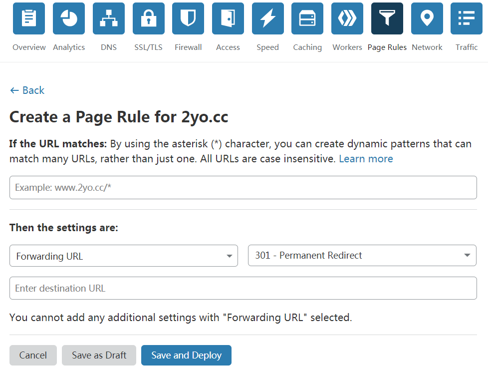
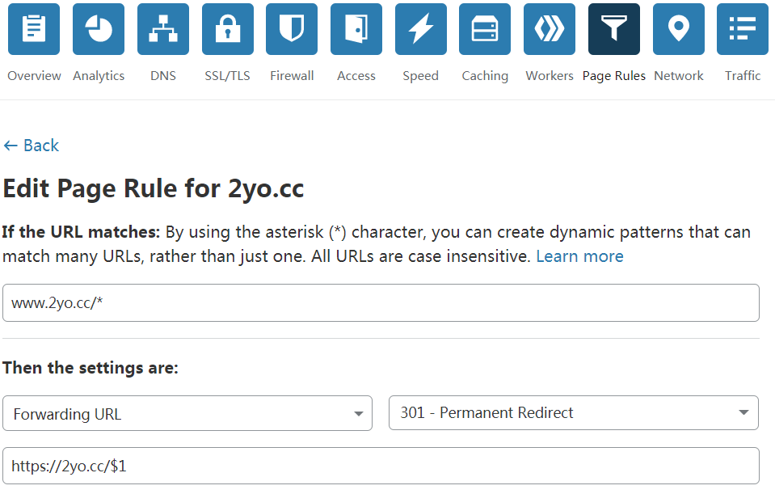

301与302的区别
301是HTTP协议状态码之一，它表示的含义是永久性的转移（Permanently Moved），而302代表的是暂时性的转移（Temporarily Moved），当用户或搜索引擎访问服务端且返回这两个状态码时，在Header中的Location字段将包含将要跳转到的网址，区别是301表示旧地址的资源已经永久的被移除了，搜索引擎在抓取新内容时也会将旧网址替换为新网址，而302表示旧资源只是暂时性的不能访问，搜索引擎不会修改旧网址。这样对搜索引擎比较友好，且对权重的影响很小。
适用情况
- 更换了新的域名，将旧域名重定向到新域名
- 网址的规范化，例如将
a.com、a.a.com等全部重定向到www.a.com - 将已经过期或无效的资源或者网页访问重定向到正确的网址
- 将 HTTP 访问重定向到 HTTPS
Cloudflare中使用301
Step1
首先要确保旧域名存在一条解析记录，否则会提示找不到ip地址，新建一条Page Rule，Type选Forwarding URL，状态选301-Permanent Redirect 。

Step2
1.统一跳转
即将a.com、a.com/xxx.html及a.com/xxx/xxx等无差别的重定向到b.com，写法为：a.com/* 301 b.com
2.对应跳转
即将a.com、a.com/xxx.html及a.com/xxx/xxx等严格跳转到b.com、b.com/xxx.html及b.com/xxx/xxx，写法为：a.com/* 301 a.com/$1

这里还有一个注意点是，旧域名只填写域名即可，而新域名必须指定协议（http或者https），否则会提示错误。
参考文章
如何设置网站 301 重定向 | 使用 Cloudflare
Comments